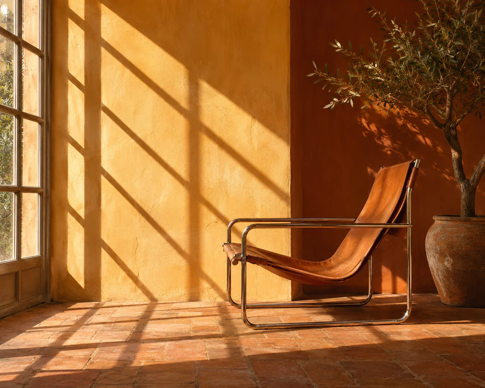
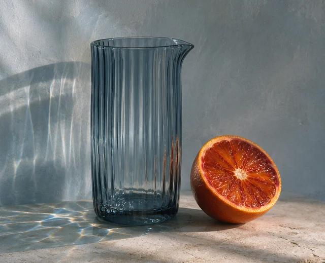
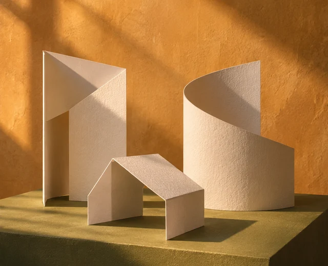

08:00 AM
East-facing window
Glass in morning light
Let light pass through the ribs of a glass to draw a second pattern across the table.
Load this setupNatural-light planning
See where sunlight falls through a studio window. Find the right hour for your next shoot before you unpack a camera.



Window study
West-facing studio
The light planner
Choose a city and a window. Move through the day to see the direction and reach of the light.
Estimated light through a clear, unobstructed window in Los Angeles (PDT).
Dayframe estimates the sun’s position from the city, date and local time. The floor plan shows a clear-sky projection through one window. Buildings, trees and cloud cover can change the light you find on set.
Field notes
Start with one of these Los Angeles setups, then adjust the time to make the shot your own.